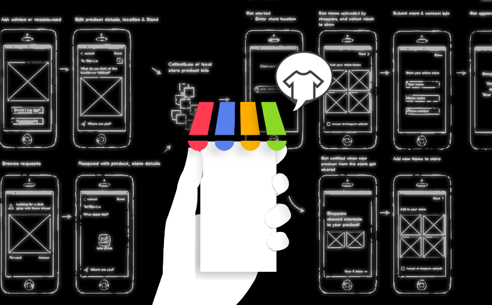
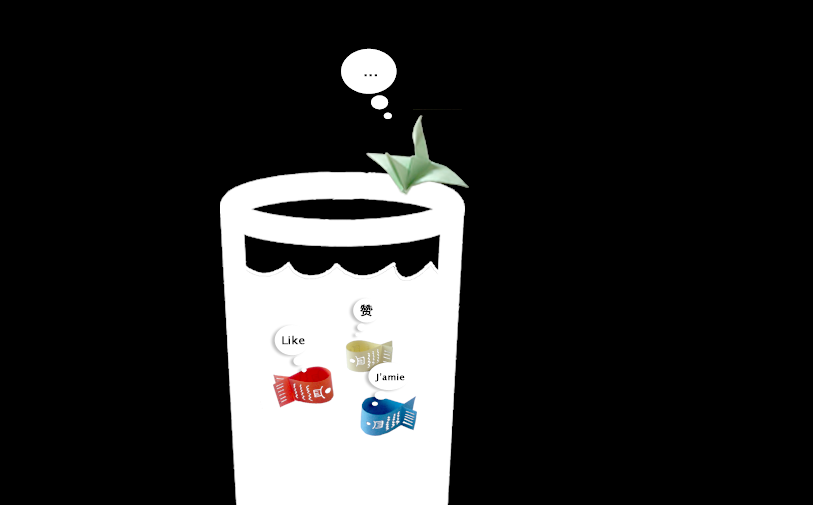
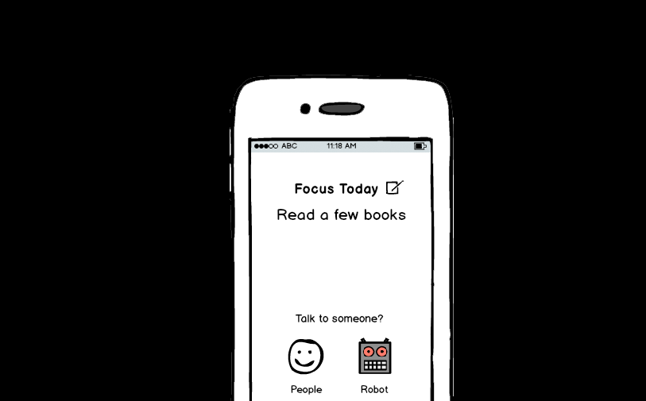

Work
CrowdStore
Business Innovation & UX Design - Empower local businesses to 'stay offline'.
Traditionally, selling online is not easy for local businesses. Though many online marketplaces allow sellers to build online stores upon a platform, one major barrier is the continuous extra expenses and efforts needed in building and maintaining the online item listings. The concept of CrowdStore is to empower local businesses to build their online stores by leveraging store shoppers provided references, which requires little extra efforts besides running their offline stores.
How can we motivate in-store shoppers to upload product details and provide shopping references? A Local Shopping In-store Exploratory Research with 40 shoppers was conducted, composed of Video Diary Study, and In-store Field Visits. The result shows half of texting during shopping trips were reported to be related to the shopping trip, often involves sharing photos to gather opinions. Shoppers are more social than online shopping because of the time pressure of a trip, and they need advice/planning right away.
Based on discovery from the research, we developed the mechanism of our application. First, it should allow in-store shoppers to easily gather immediate shopping advices by uploading the product pictures to a few specific advisor chosen by the shopper him/herself. Second, we will make use of the product information to automatically build online listings for the local store available to boarder audience. Further, We had the idea evaluated using Good-to-Great Matrix. We also discussed the idea with a few senior executives to make further refinement on how the idea aligns with the company’s scope.
After creating storyboard of the scenarios, flow diagrams & wireframes, we further developed idea into web & mobile prototypes, we presented the idea to the CEO, CTO, president and many VPs. A patent application has been filed for this idea. Further implementation of the project is in process.
Language Game
Language Game is a virtual exhibition for the awareness of the impacts of globalization.
While thinking about the topic, the online social networks come into my mind naturally. On social network, people speaking different languages comes naked on top of the borderless platform with no physical distance from each other, creates a mixture of culture, ideas, thoughts. Many interesting scenarios arise. But should everyone get involved in this "language game"? Can every language get the equal opportunity to play this game? And are we on the risk of losing our own identity when we get to play this game so well?
To visualize the scenario vividly, I had my paper fishes and birds play the language game in a glass of globalization. Fishes are the strong players talking to each other happily while ignoring that they are gradually losing their own identity by mixing around. While the paper bird is still hesitating - should I play? and who can I play with?
What do you think? Love to hear your thoughts.
Phone mini
Design of a 'minimum' smart phone. Smart, but doesn't do too much.
Life today is broken into pieces. By restless smart phones, omnipresent internet. Endlessly, we create new distractions. Exponentially, it grows love, fear, obsession and confusion. In chaos, people struggle to get a sense of living.
Psychologist Barry Schwartz in his talk The paradox of choice takes aim at a central tenet of western societies: freedom of choice. In Schwartz's estimation, choice has made us not freer but more paralyzed, not happier but more dissatisfied.
My fear of too many choices give birth to the idea of Re-design of Life Series, in which I'm in search for the answer to Why we are here and what are the other possibilities.
The smart phone becomes my first focus. When looking around, it is not easy to find a phone that doesn’t do too much today. Some wonder if everything was better back when everything was worse. I wondered what actually does a phone do? After spending time navigating through all apps scattered around my iphone, I’m surprised to reach a simple answer: Phone, no matter how complex it is, serves to keeps us in touch with people and more - the news, the smart robots, and ourselves. With that, here comes the design of Phone mini.
The work is still in progress. Welcome to share your ideas with me.